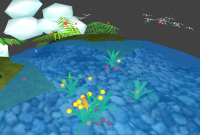
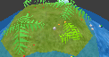

Welcome to ai.planet!

AI.Planet is a virtual world for artificial intelligence. The environment has water,
land, suns, moons, and atmosphere. Plants, animals, fish, and insects can be added
to create a dynamic ecosystem. Clouds, rain, wind, lightning, rivers, and icebergs
naturally arise from the sun and other influences. You can explore your planet from
outer space, by walking around, by tracking creatures, or by controlling a robot
that interacts with objects. Artificial Planet is an OpenSource project built with
Delphi and GLScene.
Click here
to get the most recent version.
Is it just a game?
Yes, basically it's there for you to have fun and explore a new digital world. But
as ai.planet has a full ecosystem and weather model, it is also interesting for
visualizing scientifical coherences. It is a good teaching tool for biology
and physics classes. But at first, it's fun to look at and play with, for everyone.
Now, you downloaded it and can't wait seeing it in action? Click "Getting Started"
above to learn about the exciting little world of ai.planet.
What do I need to run ai.planet properly?
The faster your CPU is, the more complex worlds it will be able to handle. The performance
of your graphics card has some impact, too.
The recommended minimum requirements are:
- A Pentium-3 or compatible processor with 800 MHz
- 256 MB of RAM
- An OpenGL capable, hardware accelerated graphics card (at least Geforce 2 or Radeon 7500)
- Windows 98/2000/XP
For best visual results, I recommend an ATI Radeon card (9500 or better) with
full scene antialiasing enabled.
Get official, beta and tweaked drivers for your 3d card
here.
